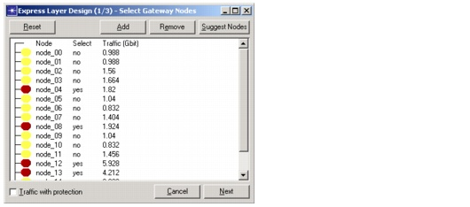

Optical Express Layer > Select Gateway Nodes Dialog Box
Select Gateway Nodes Dialog Box
The Select Gateway Nodes dialog box appears when you choose Design > Express Layer Design in the Project Editor. The treeview lists all nodes in the network and enables you to select or unselect the nodes that will act as gateway nodes.
Note—You cannot unselect a gateway node if it currently connects any express links. If you select an ECC node as a gateway node, it becomes an EOCC node to allow optical routing over the express layer.
Figure 11-1 Select Gateway Nodes Dialog Box

| Home © 1987-2007 OPNET Technologies, Inc. All Rights Reserved. This software may be covered by one or more U.S. Patents. See complete patent notice in the Legal Notices section. OPNET Support Center |